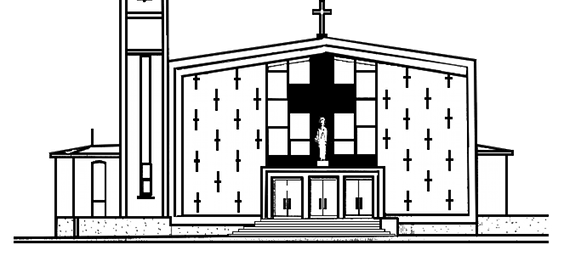

Pour ceux qui veulent goûter en quelque sorte aux débuts de notre paroisse, vous pouvez consulter des extraits de divers documents d’époque en cliquant dans cette carte-ci.

Historique
La Paroisse Saint-Paul s’étend sur un immense territoire. Elle couvre trois municipalités : Belcourt, Senneterre-Paroisse et la Ville de Senneterre.
À une certaine époque, on retrouvait sur ce territoire la Paroisse Saint-Paul (1919-aujourd’hui), la Paroisse Sainte-Cécile de Belcourt (1921-1985), la Mission Sainte-Marie d’Obaska (1944-1986), la desserte Saint-Pierre des Forces Armées Station Nottaway, base de radar (1953-1989) et la Paroisse Saint-Louis-de-Gonzagues (1959-1985).
La Paroisse Saint-Paul a une population catholique de 4 500 personnes environ.
L’église qui apparaît sur les photos noir et blanc a été construite en 1924. Son perron faisait face à la 8e Avenue (le nouvel édifice fait face, quant à lui, à la 4e Rue Ouest. Même terrain, orientation et dimensions différentes).
| La présente église a été inaugurée le 25 décembre 1960, et bénie par Son Excellence Mgr Albert Sanschagrin, o.m.i., administrateur apostolique du diocèse d’Amos, le 25 juin 1961. Sa nef pouvait accueillir 602 personnes originellement. Les bancs, la chaire, les confessionnaux et les vestiaires (sacristie) sont faits d’un mariage de chêne rouge américain et de noyer noir. Le crucifix du maître autel mesure 4,4 m de hauteur par 1,83 m de largeur et provient de Saint-Joseph de Bourlamaque. | |
|  | |